Automatic Sharding: Capabilities, Limits, and Model-Rewriting Guidelines
What sharding does
bf(..., shard=True) (or BF_SHARD=1) enables data sharding: every eligible array in the observation dictionary is split along its leading axis (axis 0) into n_devices contiguous slices, one per device (CPU virtual device or GPU). XLA then computes each device’s slice of the log-likelihood in parallel and aggregates the result.
This is distinct from chain parallelism (num_chains=N, one MCMC chain per device via pmap). Sharding parallelizes one chain’s likelihood across devices; chain parallelism runs independent chains. The automatic path pairs sharding with chain_method='vectorized'.
Data sharding is experimental and off by default. It must be switched on explicitly at construction — bf(..., shard=True) or BF_SHARD=1. A bare fit(shard=True) is refused so the limitations below are always seen before any data is split. Inspect what actually happened with m.shard_report().
The one rule that governs correctness
Sharding axis 0 is correct if the model is a composition of two patterns over that axis:
- Map — output row i depends only on input row i (elementwise ops, left-matmul
X_(N,P) @ W, per-row gathera[group]).- Reduce — an associative/commutative combine over axis 0 (
sum,mean,logsumexp,max) → XLA all-reduce.
Equivalently, in statistical terms:
Shard an axis only if the joint distribution factorizes into a product along it — the slices are conditionally independent given the parameters, \(p(Y\mid\theta)=\prod_i p(Y_i\mid\theta)\) — and replicate everything else.
If that holds, the likelihood is automatically a reduce of per-slice map terms, and none of the failure families below can arise in the likelihood.
Reductions and normalizations (softmax, mean-centering) along axis 0 are safe — they lower to all-reduce. The danger is only a non-map / non-reduce operation that touches the sharded axis, or a full-length result consumed by a replicated sink.
Correctness vs. cost — two separate questions
Once axis 0 is the genuine independent axis and structural arrays are replicated, the failure families below generally do not produce wrong numbers — XLA inserts the necessary collective (allgather / transpose / halo / all-reduce) and computes the correct answer. What remains is:
- Deadlock risk under
chain_method='vectorized'— the per-chainvmapcan stall at the inserted collective. - Communication cost — the collective can erase the speed-up.
The exception is Family 6 (wrong leading axis), which mis-assigns semantics and silently produces wrong numbers. Model rewriting is therefore mostly the craft of eliminating the collectives (avoiding deadlock and cost), and only for Family 6 the craft of picking the right axis.
The six failure families
| # | Family | Example operations | Why it breaks |
|---|---|---|---|
| 1 | Cross-position coupling | diff, cumsum/cumprod, lax.scan over the sharded axis, AR/Kalman/HMM/RNN/ODE, convolution, sort/argsort, roll, FFT, rank/quantile |
row i needs rows j≠i across the device boundary |
| 2 | All-to-all / pairwise | outer products using axis 0 both ways, Gram / distance / kernel matrices, attention, reciprocity Y + Y.T |
needs every pair (i,j) → cross-device |
| 3 | Contraction over the sharded axis | W @ X where X’s axis 0 is the inner dim; two sharded operands multiplied |
the contracted dim is split, not a clean reduction |
| 4 | Whole-array linear algebra | cholesky, inv, solve, qr, svd, eig, det, lstsq |
factorization needs the full (N,N); row-shard → non-square local |
| 5 | Index / segment ops crossing partitions | scatter, segment_sum, bincount, unique, permutation gather X[perm] |
segment/index spans both devices |
| 6 | Wrong semantic leading axis | feature-major (D,N), time-major (T,N), transition (K,K), parameter grids |
axis 0 was never the observation axis → silent wrong numbers |
Same primitive, opposite verdict. What matters is which axis the operation ranges over, not the operation itself:
a[group]withgroupper-observation → map, safe.b[group[:,None], group[None,:]]usinggroupas a matrix dimension → breaks.lax.scanover a within-row dimension undervmapover axis 0 → map, safe.lax.scanover the sharded axis (carry crosses rows) → Family 1.
What WORKS out of the box
# A1 — linear regression: axis 0 = observations, per-row factorized
def model(X, y): # X (N,P), y (N,) → both sharded
beta = m.dist.normal(0, 1, shape=(X.shape[1],), name="beta")
sigma = m.dist.half_normal(1, name="sigma")
m.dist.normal(X @ beta, sigma, obs=y, name="y") # X@beta = map; loglik sum = reduce# A2 — hierarchical: `group` is ALSO per-observation
def model(group, y): # group (N,) int, y (N,)
a = m.dist.normal(0, 1, shape=(G,), name="a") # (G,) replicated
m.dist.normal(a[group], 1, obs=y, name="y") # a[group] = per-row gather = map# A3 — scan WITHIN a row, vmapped over the sharded axis (see benchmark_shard.py)
def model(X, y):
w = m.dist.normal(0, 1, name="w")
def process_one(x): # x is ONE observation
final, _ = lax.scan(lambda c, _: (jnp.tanh(w*c + x), None),
x, None, length=100) # scans 100 inner steps, NOT N
return final
mu = jax.vmap(process_one)(X) # map over axis 0 → safe
m.dist.normal(mu, 1, obs=y, name="y")What CRASHES loudly (safe failures — you find out)
# B1 — SRM receiver effect: receiver_predictors axis 0 is a COLUMN dimension
r = receiver_predictors @ r_eff # sharded → (N/d,) not (N,)
s[:, None] + r[None, :] # (N/d,1)+(1,N/d) → (N/d,N/d) ≠ (N/d,N) → crash
# B3 — covariance Cholesky on a sharded (N,N): non-square local block → crash
L = jnp.linalg.cholesky(Sigma)What RUNS but DEADLOCKS or is SILENTLY WRONG (the dangerous tier)
# C1 — AR(1) on an OBSERVED series, time sharded: y[t] needs y[t-1] on another device
eps = y[1:] - rho * y[:-1] # boundary term → halo exchange → deadlock (vectorized)
# C3 — leading axis is structural, not observations (Family 6): silent wrong numbers
mu = jnp.einsum("tn,t->n", X_time, w) # X_time (4,N) sharded over the 4 "time-features"Visualizing the operations on small arrays
Every figure below traces one operation on a tiny example — N = 6 observations across 2 devices:
- device 0 holds rows 0–2 (blue), device 1 holds rows 3–5 (orange);
- grey = replicated on both devices;
- red = cross-device communication (allgather / halo / all-to-all) or breakage;
- green = local / safe.
All figures are generated by viz_sharding_ops.py in this folder — rerun it to regenerate the op_*.png files.
Safe patterns: map + reduce
MAP — output row i depends only on input row i (elementwise, X @ β, per-row gather a[group]). Each device works on its own rows with no comms.
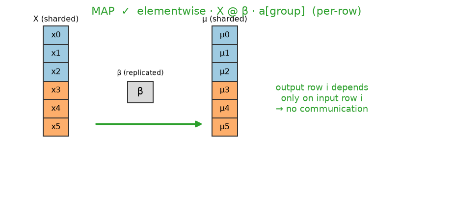
REDUCE — sum / mean / logsumexp / max over axis 0 lower to a single all-reduce of a scalar (this is what aggregates the log-likelihood).
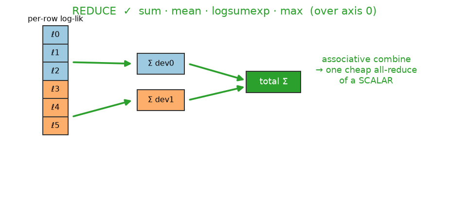
Family 1 — cross-position coupling
Row i needs other rows j ≠ i, which live on another device.
diff / lag (jnp.diff, y[1:] − ρ·y[:-1]) — the pair straddling the boundary needs a value from the other device:
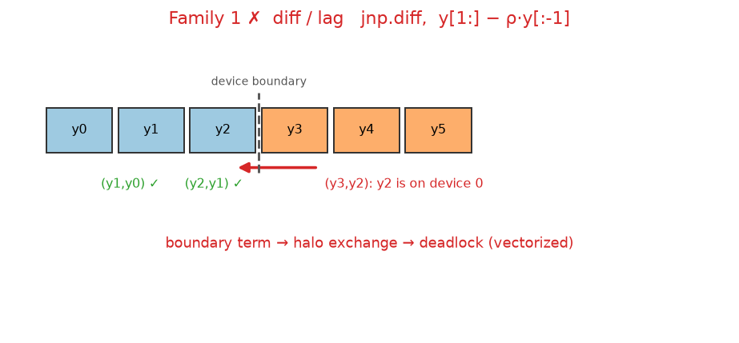
cumsum / cumprod — a prefix scan carries a running total across the boundary:
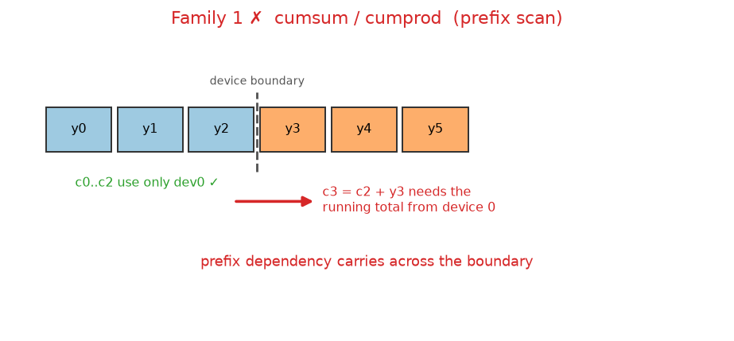
lax.scan — over the sharded axis the carry crosses the boundary (breaks); within a row under vmap it is local (safe). Same primitive, opposite verdict:
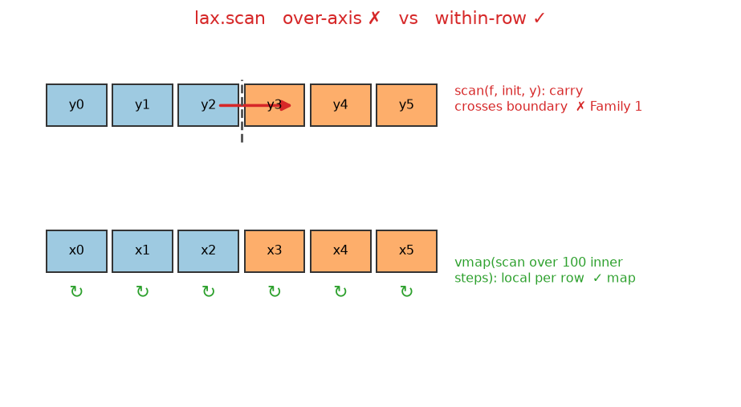
sort / argsort / roll / FFT — reordering moves elements between devices:
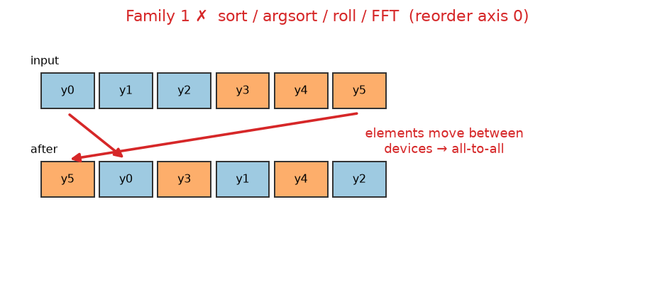
convolution — a kernel window at the boundary needs a neighbour from the other device (a halo exchange):
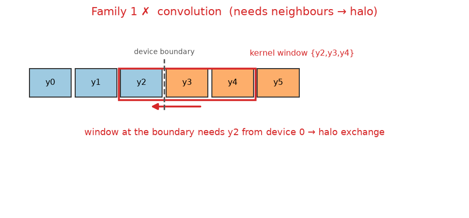
Family 2 — all-to-all / pairwise
transpose / reciprocity Y + Y.T — a row-sharded matrix has its columns spread across devices:
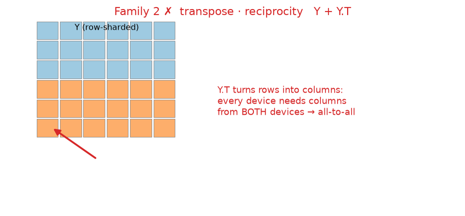
outer product / Gram / distance / kernel / attention — element (i,j) needs both xᵢ and xⱼ, which sit on different devices:
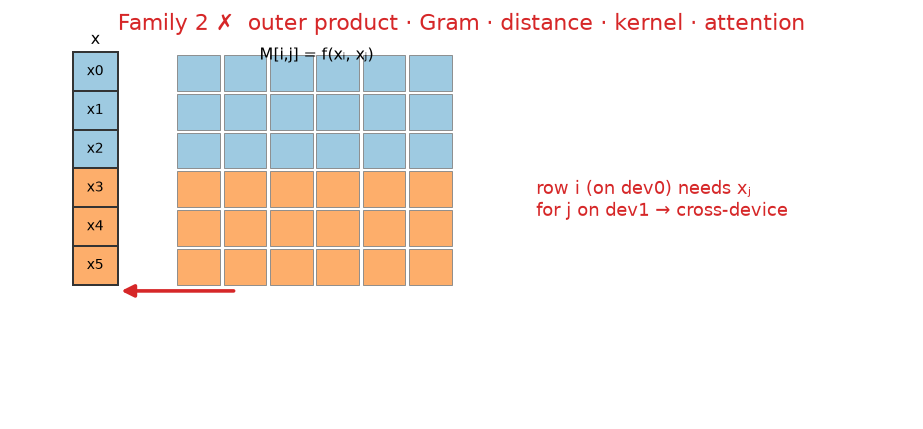
Family 3 — contraction over the sharded axis
W @ X where X’s axis 0 is the inner (contracted) dimension — the split dimension cannot be contracted locally:
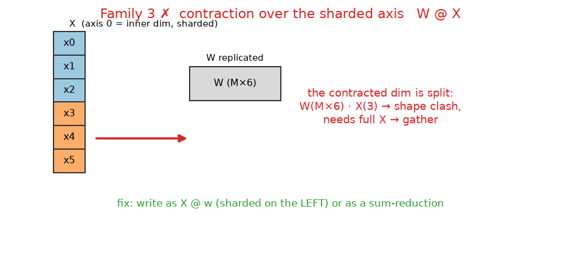
Family 4 — whole-array linear algebra
cholesky / inv / solve / qr / svd / eig / det — a factorization couples every row with all columns; a row block is not even square:
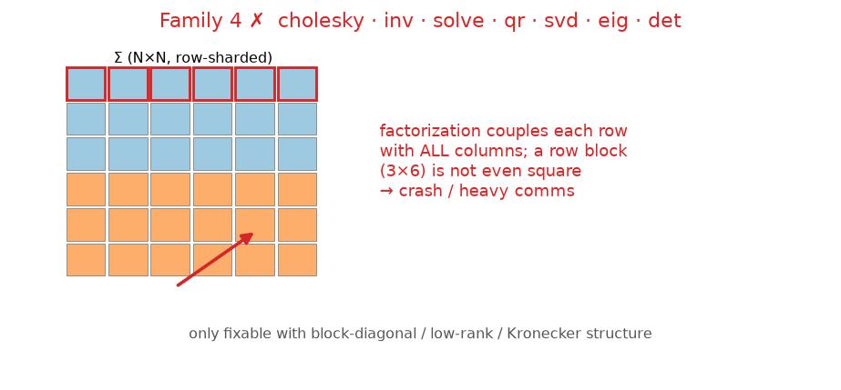
Family 5 — index / segment ops crossing partitions
segment_sum / scatter / bincount — a segment that spans the boundary needs a cross-device combine:
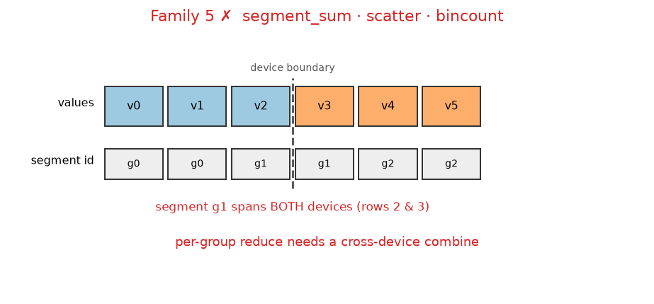
permutation gather X[perm] / unique — arbitrary indices pull rows across devices:
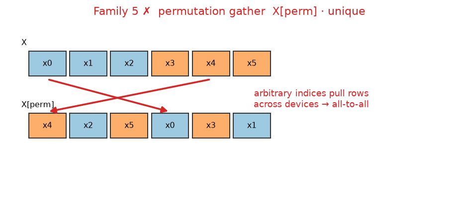
Family 6 — wrong leading axis
A feature- or time-major array (D, N) sharded on axis 0 splits the feature axis, not observations — each device sees a subset of features and computes a wrong result with no crash:
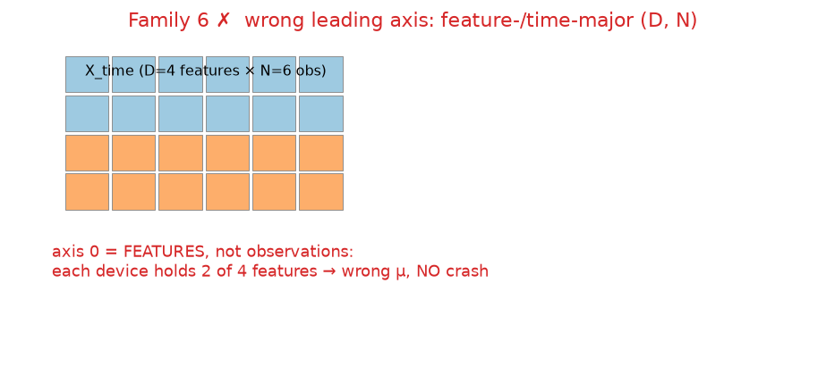
The reframing fixes
Materialize observed lags (Family 1) — two aligned arrays, each transition carries its own neighbour, so the computation becomes elementwise (map):
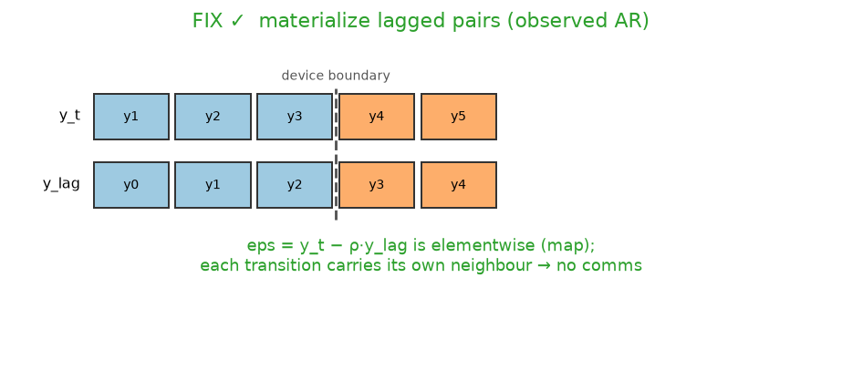
SRM outer sum (Family 2) — a sharded column plus a replicated O(N) row gives the full matrix locally, with no transpose:
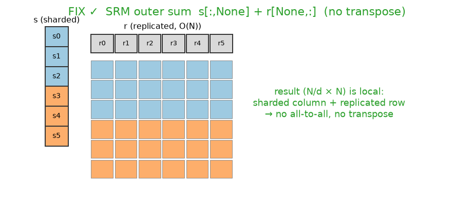
Reframing a model to be shard-compatible
Model rewriting can convert several families into the safe map + reduce form — when the model has algebraic structure to exploit.
Replicate small coupled vectors instead of transposing (Family 2)
For the SRM, the receiver effect needs the full node axis, but it is a length-\(N\) vector (\(O(N)\)), not an \(O(N^2)\) matrix. Do not transpose the sharded \((N,N)\) matrix — a transpose is an all-to-all communication that merely relocates the cost. Instead replicate the small vector and use an outer sum:
# model_effects2.sender_receiver — the correct pattern
s = s_fixed + sr_rf[:, 0] # sender: sharded, per-row (the "by-row" case)
r = r_fixed + sr_rf[:, 1] # receiver: REPLICATED length-N vector
return s[:, None] + r[None, :] # (N/d, N) per device — local broadcast, no transposeThe lesson: don’t try to make every term row-parallel. Make the big things (\(O(N^2)\) data) map+reduce, and replicate the small things (\(O(N)\) node vectors). A transpose is never free — it is communication.
Materialize observed lags as data (Family 1, observed case)
A fully-observed AR(p) only looks sequential. Its likelihood factorizes, \(p(y_{1:T}\mid y_0,\theta)=\prod_t \mathcal{N}(y_t\mid\rho y_{t-1},\sigma)\), and each factor depends only on observed \(y_t,y_{t-1}\). Materialize the lag as a second aligned array on the host and the cross-row coupling disappears:
# host preprocessing — each row carries its own copy of the neighbour
y_t, y_lag = y[1:], y[:-1] # both shard along the transition axis
def ar1(y_t, y_lag):
rho = m.dist.uniform(-1, 1, name="rho")
sigma = m.dist.half_normal(1, name="sigma")
m.dist.normal(rho * y_lag, sigma, obs=y_t, name="y_t") # elementwise = mapThis is just AR-as-regression: for AR(p), build the \((T{-}p)\times p\) lagged design matrix Z and write Z @ phi. Cost: \((p{+}1)\times\) memory; benefit: full shardability, no boundary communication.
This gives the likelihood conditional on the first \(p\) observations (it drops the \(y_0\) stationary marginal) — the standard choice. The exact full likelihood uses the dense \(T{\times}T\) Toeplitz covariance + Cholesky, which is Family 4 and is not shardable this way.
The hard boundary: observed vs. latent coupling
The lag-materialization trick works because \(y_{t-1}\) is data. It fails the moment the recursion is over an unobserved quantity, because you cannot precompute an unknown.
| Cross-row coupling is among… | Reframe as lagged data? | Shardable? |
|---|---|---|
| observed values (AR, VAR, observed Markov, NARX) | ✅ materialize lags | ✅ map + reduce |
| latent values (Kalman, HMM, stochastic volatility, MA, ARMA) | ❌ can’t precompute unknowns | ❌ latent path stays replicated |
For latent state-space models, the transition prior x[1:] - rho*x[:-1] is a cross-row op on a parameter vector. That vector must be replicated on every device; sharding can then only parallelize the conditionally-independent observation layer \(y_t\mid x_t\), and only if that layer is the expensive part.
Can reframing fix every family?
| Family | Fixable by rewriting? | Condition |
|---|---|---|
| 3 — contraction over sharded axis | ✅ Yes | write as X @ w (sharded left) or a sum-reduction |
| 6 — wrong leading axis | ✅ Yes | pick the right axis / replicate structural arrays |
| 1 — cross-position coupling | ⚠️ Partly | observed lags → materialize; latent → cannot |
| 2 — pairwise / transpose | ⚠️ Partly | only with structure (separable / low-rank / outer-sum, e.g. SRM) |
| 5 — scatter / segment | ⚠️ Partly | only if grouping aligns with shard boundary or becomes a dense reduce |
| 4 — dense linear algebra | ❌ No | unless block-diagonal / low-rank / Kronecker structure exists |
Multiple independent axes
A 1-D device mesh (PartitionSpec('device')) can shard only one axis; everything coupled to it must be replicated. That suffices when the non-sharded axes are small enough to replicate. It is not enough when:
- Multiple data arrays have different natural axes (panel / longitudinal / spatio-temporal) and the replicated axis is itself too large to fit; or
- The structure is crossed / bipartite — e.g. the SRM at large \(N\), where \(Y[i,j]\) is conditionally independent across the 2-D dyad index. Row-sharding handles senders but the receiver/column structure must be replicated (\(O(N^2)\) memory wall).
Both require an N-D mesh with per-array PartitionSpec (e.g. block-shard sender × receiver across a 2-D mesh) — beyond the current 1-D implementation, and they intrinsically need a declarative placement because two different axes cannot be inferred automatically.
Practical checklist
- Opt in explicitly:
bf(..., shard=True); read the warning. - Identify the conditional-independence axis and make it axis 0.
- Replicate everything coupled to it that is not indexed by it (
m.replicate(...)), especially \(O(N)\) node vectors and \((N,N)\) covariates. - Do cross-row preprocessing on the host (materialize lags, differences, sorts) — never inside the model on a sharded array.
- Keep cross-row primitives off the sharded axis (
scan/cholesky/diffeither operate within-row undervmap, or on replicated parameters). - Ensure aligned arrays share the exact partition (same length, same order).
- Audit with
m.shard_report()and validate the posterior against a single-device (replicated) run before trusting a sharded fit.
For genuinely silent cases (Family 6), the only automatic safeguard is a runtime check that compares the model’s log-density replicated vs. sharded on the real data and falls back to replication on mismatch. This is the recommended next step for making automatic sharding safe without a declarative spec.
alternative appraoche with user sharding spec
# model author declares intent once:
SHARD_SPEC = {
"Y_mat": "shard", "dyadic_predictors_mat": "shard", "sender_predictors": "shard",
"receiver_predictors": "replicate", "Any": "replicate", "Merica": "replicate",
}
def _auto_shard_data(self, data, spec=None):
spec = spec or getattr(self.model, "_shard_spec", {})
out = {}
for k, v in data.items():
how = spec.get(k, "replicate") # safe default = replicate
if how == "shard":
arr = jnp.asarray(v)
if arr.shape[0] % self.n_devices != 0:
raise ValueError(f"{k}: leading dim {arr.shape[0]} not divisible by n_devices={self.n_devices}")
out[k] = jax.device_put(arr, self._data_sharding)
else:
out[k] = jax.device_put(jnp.asarray(v), self._rep_sharding)
return outResults: validating the safeguards
Two automatic safeguards were implemented and tested (sharding_safeguards.py, test_sharding_safeguards.py in this folder):
- Static check (fit setup): lower + compile the function under the intended shardings and scan the optimized HLO for array-moving collectives (
all-gather/all-to-all/collective-permute/reduce-scatter); a scalarall-reduce— the likelihood sum — is treated as benign. A coarse jaxpr primitive scan complements it for index ops. - Runtime value check: evaluate the function with data replicated vs. sharded and compare against a trusted reference.
One case per family (2 CPU devices, N = 6)
| case | family | static check | runtime value |
|---|---|---|---|
safe_map |
safe | none (all-reduce only) | match |
safe_reduce |
safe | none (all-reduce only) | match |
fam1_lag |
1 | collective-permute | match |
fam1_cumsum |
1 | all-gather + cumsum |
match |
fam1_sort |
1 | all-gather + sort |
match |
fam1_conv |
1 | collective-permute + conv |
match |
fam1_scan |
1 | all-gather | match |
fam2_transpose |
2 | all-to-all | match |
fam2_outer |
2 | all-to-all | match |
fam3_contraction |
3 | none (benign all-reduce) | match |
fam4_cholesky |
4 | all-gather + all-to-all + cholesky |
match |
fam5_segment |
5 | scatter-add (no array collective) |
match |
fam5_perm_gather |
5 | gather (no array collective) |
match |
fam6_shardmap (no psum) |
6 | none | MISMATCH |
The key finding: GSPMD makes sharding a performance decision, not a correctness one
Every plain-JAX case returned the same value sharded as replicated — lag, cumsum, sort, transpose, cholesky, gather, all of them. This is not luck: under GSPMD (jax.jit + device_put, which is exactly the BayesForge auto-shard path), the partitioned program is sharding-invariant by construction — XLA inserts whatever collectives are needed so the result equals the single-device result.
This corrects the earlier framing in this document. Under pure GSPMD even a “wrong leading axis” (Family 6) is numerically correct — contracting the wrong axis is still a reduction, which XLA aggregates correctly. The only genuinely silent wrong number appeared when leaving GSPMD via a manual shard_map without its psum (fam6_shardmap). So:
- Correctness is essentially never the risk under GSPMD auto-sharding.
- The dominant real risk is the collectives XLA inserts for the coupled families — they cause the deadlock under
chain_method='vectorized'and the loss of speed-up. - Silent wrong numbers require manual SPMD (
shard_map,custom_jvp, device-dependent logic).
What each safeguard is for, and why both are needed
| detects WRONG numbers | detects DEADLOCK / cost | |
|---|---|---|
| static HLO + primitive scan | no (except via crash) | yes |
| runtime value check | yes | no |
- The static check answers “will this sharding be slow / deadlock?” — the common risk. It precisely flagged the collective-inducing families, stayed quiet on map/reduce and on contraction (benign all-reduce), and the primitive scan caught
gather/scatterthat GSPMD had optimized into a cheap path (so the HLO scan alone missed them — the precise-vs-conservative trade-off). - The runtime check answers “is the number still correct?” — it confirmed all 13 GSPMD cases and was the only check to catch the
shard_mapbug, where a missing collective leaves no trace in the HLO.
Neither alone is sufficient; together they cover both axes.
Manual per-operation sharding (manual_ops/)
Declaring sharding for one operation inside the model — keeping data replicated and parallelizing only a chosen op — was validated in manual_ops/test_manual_ops.py:
| model | correct? | collectives |
|---|---|---|
with_sharding_constraint (shard one op) |
match | none at N=6 (scatter/gather at scale) |
shard_map + psum (explicit map+reduce) |
match | none (scalar psum only) |
SRM outer sum (shard s, replicate r) |
match | none — no transpose |
shard_map without psum |
WRONG | none → caught by value check |
This confirms the surgical approach: GSPMD constraints stay correct automatically; explicit shard_map gives no-hidden-comms control but puts correctness on the author — exactly where the value check earns its keep.
Do the safeguards slow down sampling?
No. Both run once, at fit setup, before the MCMC loop — never inside the per-leapfrog hot path:
- Static check — one extra
lower().compile()plus amake_jaxprtrace. The compilation is the only real cost (seconds for a large model), a fixed setup overhead amortized to ~nothing over the thousands of gradient steps a run performs. Zero per-step cost. - Runtime value check — two forward evaluations (no autodiff), once. Negligible next to MCMC’s thousands of gradient evaluations.
The sampling itself is unchanged. The only price is a one-time setup bump (dominated by the extra compile), which can be gated to the first run.